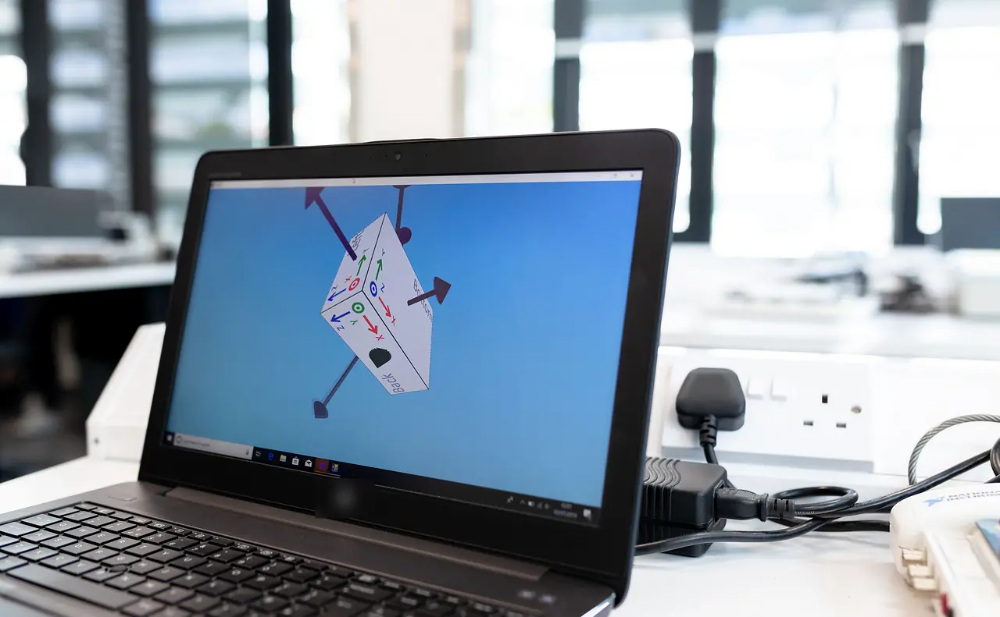
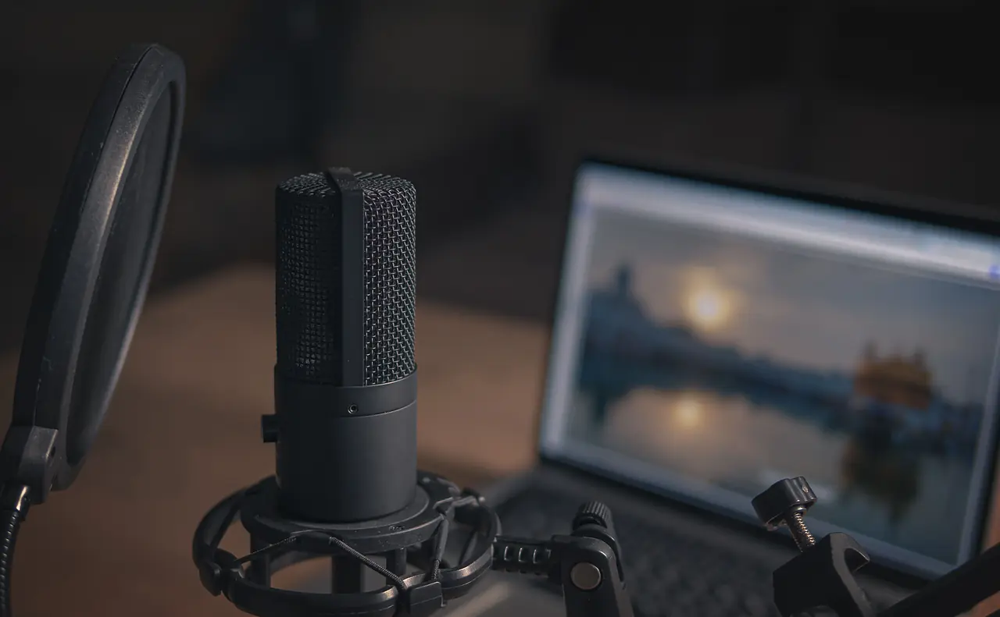

Motion graphic
Video motion graphic là gì? Khác gì animation, video quay và giá bao nhiêu?
Nhiều chủ doanh nghiệp nghe đến motion graphic nhưng chưa rõ nó là gì, khác hoạt hình ở đâu và vì sao báo giá chênh nhau nhiều. Bài này giải thích từ gốc, kèm bảng so sánh và cách ước tính chi phí trước khi hỏi giá.

Video motion graphic là video dùng đồ họa chuyển động (chữ, hình khối, biểu tượng, biểu đồ, hình minh họa) để truyền một thông điệp, thay vì quay cảnh thật. Nó hợp nhất khi bạn cần giải thích thứ khó quay như phần mềm, quy trình, số liệu hoặc dịch vụ vô hình. Giá phụ thuộc chủ yếu vào độ dài, mức độ đồ họa (2D đơn giản, minh họa nhân vật hay 3D) và việc có cần kịch bản, lồng tiếng hay không; tại Dream Labs, gói thấp nhất bắt đầu từ 3.000.000đ mỗi video.
Bài này là bài nhập môn: định nghĩa, phân biệt với animation và video quay, các loại thường gặp và cách đọc một báo giá. Nếu bạn đã biết mình cần video giới thiệu sản phẩm, có thể đọc thẳng bài video motion graphic giới thiệu sản phẩm. Nếu đang phân vân giữa motion graphic và dựng từ cảnh quay, bài làm video quảng cáo: motion graphic hay edit video sẽ giúp bạn chọn.
Motion graphic là gì, hiểu đơn giản
Tên gọi đã nói lên bản chất: motion là chuyển động, graphic là đồ họa. Một nhà thiết kế làm ra các thành phần hình ảnh giống như khi làm poster hay bộ nhận diện, rồi một người làm chuyển động (motion designer) cho chúng xuất hiện, di chuyển, biến đổi theo nhịp lời thoại và âm nhạc.
Điểm khác của motion graphic so với một tấm ảnh thiết kế là yếu tố thời gian. Người xem không tự đọc hết mọi thứ cùng lúc, mà được dẫn qua từng ý theo thứ tự bạn muốn. Nhờ vậy, một nội dung phức tạp có thể được chia nhỏ: ý một xuất hiện, biến mất, nhường chỗ cho ý hai.
Thành phần của một video motion graphic
- Hình ảnh: chữ, biểu tượng, hình khối, biểu đồ, hình minh họa, ảnh sản phẩm hoặc mô hình 3D.
- Chuyển động: cách các thành phần xuất hiện, chuyển cảnh, nhấn mạnh.
- Âm thanh: nhạc nền, lời đọc (lồng tiếng), hiệu ứng âm thanh khớp với từng chuyển động.
- Kịch bản: thứ tự các ý và số giây dành cho mỗi ý. Đây là phần quyết định video có dễ hiểu hay không.

Motion graphic khác animation 2D, 3D thế nào
Ranh giới giữa hai khái niệm này không tuyệt đối, và trong thực tế nhiều video kết hợp cả hai. Nhưng có một cách phân biệt dễ nhớ: animation thường kể chuyện bằng nhân vật, còn motion graphic thường truyền thông tin bằng đồ họa.
- Animation 2D nhân vật: nhân vật có cử chỉ, biểu cảm, đi lại, nói chuyện. Mỗi cử động phải vẽ hoặc dựng khung xương rất kỹ, nên tốn công hơn nhiều so với chữ và biểu tượng chuyển động.
- Animation 3D: dựng mô hình, chất liệu, ánh sáng rồi render. Hợp với sản phẩm vật lý cần xoay nhiều góc, cần thấy cấu tạo bên trong.
- Motion graphic: trọng tâm là thông điệp. Có thể có nhân vật đơn giản để minh họa tình huống, nhưng phần chính vẫn là chữ, số liệu, biểu tượng, giao diện.
Khi một bên báo giá "motion graphic 2D có nhân vật", hãy hỏi rõ nhân vật cử động nhiều hay ít. Một nhân vật đứng gật đầu khác rất xa một nhân vật đi lại, cầm nắm đồ vật, và giá cũng khác theo.
Khác video quay thật ở đâu
Video quay thật dựa vào cảnh có sẵn ngoài đời: người, cửa hàng, sản phẩm. Motion graphic thì tạo ra mọi thứ từ đầu trên máy tính. Mỗi loại mạnh ở chỗ khác nhau.
| Tiêu chí | Motion graphic | Animation nhân vật | Video quay thật |
|---|---|---|---|
| Mạnh nhất khi | Giải thích quy trình, số liệu, phần mềm, dịch vụ | Kể chuyện có cảm xúc, có tình huống | Tạo niềm tin bằng hình ảnh thật, con người thật |
| Cần quay phim | Không | Không | Có, cần địa điểm, người, thiết bị |
| Sửa nội dung sau này | Dễ, thay chữ, số, màu rồi xuất lại | Vừa phải, tùy cảnh | Khó, thường phải quay lại |
| Phụ thuộc thời tiết, diễn viên | Không | Không | Có |
| Yếu tố đẩy chi phí | Độ dài, độ chi tiết đồ họa, 3D | Số cử động nhân vật, số cảnh | Ngày quay, ê-kíp, địa điểm, hậu kỳ |
Lợi thế ít được nhắc của motion graphic là dễ cập nhật. Khi giá đổi hay tính năng mới ra, đơn vị làm có thể sửa đúng cảnh đó trong file dự án và xuất lại, không cần tổ chức buổi quay mới. Nhiều doanh nghiệp kết hợp cả hai: quay người thật để tạo niềm tin, chèn đoạn motion graphic để giải thích phần khó.
Các loại video motion graphic phổ biến
1. Video explainer (giải thích)
Thường dài 45–90 giây, trả lời ba câu: khách đang gặp vấn đề gì, sản phẩm giải quyết thế nào, bước tiếp theo là gì. Hợp với phần mềm, ứng dụng, dịch vụ tài chính, bảo hiểm, logistics. Ví dụ minh họa: một công ty phần mềm quản lý nhà thuốc ở Việt Nam muốn giải thích việc nhập hàng, cảnh báo hạn dùng và báo cáo tồn kho trong một phút, thay vì gửi tài liệu hướng dẫn dài. Dream Labs có trang riêng về video giới thiệu phần mềm, app.
2. Logo animation và intro thương hiệu
Logo chuyển động trong 3–10 giây, dùng mở đầu hoặc kết thúc mọi video của thương hiệu. Làm một lần, dùng rất lâu. Xem trang logo animation để biết các kiểu chuyển động thường dùng.
3. Infographic động
Biến số liệu, biểu đồ, quy trình thành hình chuyển động. Hợp với báo cáo thường niên, bài thuyết trình gọi vốn, nội dung đào tạo nội bộ. Ví dụ minh họa: một doanh nghiệp xuất khẩu nông sản muốn trình bày chuỗi từ vùng trồng, sơ chế, đóng gói đến cảng trong một video ngắn gửi đối tác nước ngoài.
4. Video quảng cáo ngắn
Dài 6–30 giây, cho mạng xã hội hoặc quảng cáo trả phí. Nhịp nhanh, chữ to, thông điệp chỉ một ý. Thường cần nhiều tỷ lệ khung hình (dọc 9:16, vuông 1:1, ngang 16:9).
5. Đồ họa chèn trong video khác
Tiêu đề, phụ đề động, bảng tên người nói, biểu đồ chèn vào video phỏng vấn hoặc video quay sự kiện. Phần này thường nằm trong dịch vụ dựng video hơn là một video motion graphic riêng.
Khi nào nên làm motion graphic, khi nào không
Nên dùng motion graphic khi:
- Sản phẩm vô hình hoặc nằm bên trong: phần mềm, dịch vụ, cơ chế hoạt động.
- Bạn cần giải thích nhiều bước trong thời gian ngắn.
- Nội dung sẽ được cập nhật định kỳ (bảng giá, tính năng, số liệu).
- Bạn chưa có sản phẩm thật để quay, hoặc quay rất tốn kém.
Không nhất thiết dùng motion graphic khi bạn cần khách tin vào con người thật (bác sĩ, đầu bếp, chủ cửa hàng), cần cho thấy không gian thật (khách sạn, nhà hàng, showroom), hoặc làm video ngắn đăng hằng ngày với ngân sách thấp. Lúc đó dựng từ cảnh quay điện thoại thường hợp lý hơn; xem bài thuê edit video bao nhiêu tiền để so sánh chi phí.
Giá video motion graphic phụ thuộc vào đâu
Hai video cùng dài 30 giây có thể chênh nhau nhiều lần về giá. Lý do nằm ở lượng công việc phía sau, không phải ở số giây.
Độ dài và số cảnh
Mỗi giây đều phải được thiết kế và làm chuyển động. Video 60 giây với 12 cảnh tốn công gần gấp đôi video 30 giây với 6 cảnh cùng phong cách.
Mức độ đồ họa
Theo thứ tự công sức tăng dần: chữ và biểu tượng chuyển động, minh họa phẳng tùy biến, nhân vật 2D có cử động, mô hình 3D có ánh sáng và chất liệu. Bước từ 2D lên 3D thường là bước tăng chi phí lớn nhất.
Kịch bản, storyboard và âm thanh
Bạn đã có kịch bản sẵn hay cần viết từ đầu, có cần storyboard để duyệt trước, lồng tiếng bằng giọng AI hay giọng thật, có cần sound design (hiệu ứng âm thanh khớp từng chuyển động) hay chỉ nhạc nền.

Số phiên bản và số vòng sửa
Mỗi tỷ lệ khung hình cần sắp xếp lại bố cục, không chỉ cắt viền. Số vòng sửa trong gói cũng ảnh hưởng giá; góp ý gom gọn mỗi vòng giúp bạn không phát sinh.
Thời hạn
Cần gấp hơn thời gian thông thường của gói có thể phải tăng người làm. Tham khảo thời gian từng bước trong bài làm video motion graphic mất bao lâu.
Checklist đọc một báo giá motion graphic
Trước khi so giá giữa các bên, hãy hỏi đủ những câu sau để chắc mình đang so cùng một thứ:
- Video dài tối đa bao nhiêu giây, bao nhiêu phiên bản tỷ lệ khung hình?
- Phong cách là chữ chuyển động, minh họa phẳng, nhân vật 2D hay 3D?
- Giá đã gồm viết kịch bản và storyboard chưa?
- Lồng tiếng giọng AI hay giọng thật, ai chọn giọng?
- Nhạc nền có giấy phép dùng thương mại không, dùng được trên những kênh nào?
- Bao nhiêu vòng sửa, sửa ở bước nào thì tính phí thêm?
- Có bàn giao file dự án gốc không, hay chỉ file video?
- Thời gian từ lúc chốt brief đến lúc nhận bản cuối là bao lâu?
Sai lầm thường gặp khi đặt làm motion graphic
- Nhồi quá nhiều ý vào một video. Video 60 giây chỉ nên mang một thông điệp chính và hai, ba ý phụ. Muốn nói nhiều hơn, hãy làm loạt video ngắn.
- Duyệt lướt kịch bản rồi sửa ở bước làm chuyển động. Đổi một câu thoại lúc này kéo theo sửa hình, sửa nhịp, sửa âm thanh.
- Chọn 3D khi 2D đã đủ. 3D đẹp nhưng tốn hơn; với phần mềm hay dịch vụ, 2D thường truyền đạt rõ hơn.
- Không nghĩ trước nơi đăng. Làm xong bản ngang mới nhớ cần bản dọc cho TikTok, Reels, phải dàn lại bố cục.
- Dùng nhạc không rõ giấy phép. Video quảng cáo có thể bị tắt tiếng hoặc gỡ.
- Chỉ so giá theo số giây. Hai báo giá cùng con số có thể khác nhau hoàn toàn về phong cách, kịch bản, lồng tiếng và số phiên bản.
Giá làm video motion graphic tại Dream Labs
Dream Labs chia motion graphic thành ba gói theo độ dài và mức độ đồ họa. Gói Cơ bản 3.000.000đ/video dành cho logo animation hoặc video đến 15 giây, có nhạc nền bản quyền, xuất 2 tỷ lệ. Gói Chuyên nghiệp 7.000.000đ/video cho video đến 60 giây, gồm kịch bản, storyboard, minh họa nhân vật 2D và lồng tiếng AI hoặc giọng thật, hợp với video explainer. Gói Cao cấp 15.000.000đ/video cho video đến 2 phút kết hợp 2D và 3D, art direction riêng, sound design đầy đủ và bộ cắt ngắn cho mạng xã hội.
| Gói | Giá | Thời gian | Bao gồm |
|---|---|---|---|
| Cơ bản | 3.000.000đ/video | 4–5 ngày2 vòng sửa | Logo chuyển động hoặc intro ngắn giúp mọi video của thương hiệu trông chuyên nghiệp.
|
| Chuyên nghiệpPhổ biến nhất | 7.000.000đ/video | 7–10 ngày3 vòng sửa | Giải thích sản phẩm khó hiểu trong 60 giây, khách nắm được giá trị mà không phải đọc dài.
|
| Cao cấp | 15.000.000đ/video | 14–21 ngày4 vòng sửa | Video thương hiệu có art direction riêng, kèm bản cắt ngắn dùng cho nhiều kênh.
|
Xem thêm ví dụ và các trang theo ngành tại dịch vụ video motion graphic, so sánh với các dịch vụ khác ở bảng giá. Nếu chưa chắc nên chọn gói nào, hãy gửi mô tả sản phẩm qua Zalo 0934 246 420, Dream Labs sẽ gợi ý loại video và độ dài phù hợp.
Câu hỏi thường gặp
Motion graphic là gì nói ngắn gọn?
Là video dùng đồ họa chuyển động như chữ, biểu tượng, biểu đồ, hình minh họa để truyền thông điệp, không cần quay cảnh thật. Nó hợp nhất để giải thích thứ khó quay như phần mềm, dịch vụ, quy trình hay số liệu.
Motion graphic và animation có phải là một?
Không hoàn toàn. Animation thường kể chuyện bằng nhân vật có cử chỉ, biểu cảm; motion graphic tập trung truyền thông tin bằng đồ họa. Nhiều video kết hợp cả hai, ví dụ explainer có nhân vật đơn giản minh họa tình huống.
Một video motion graphic nên dài bao nhiêu?
Logo animation khoảng 3–10 giây, quảng cáo mạng xã hội 6–30 giây, video explainer 45–90 giây. Video dài hơn 2 phút nên chia thành nhiều phần để người xem dễ theo dõi.
Làm motion graphic có cần quay phim không?
Không. Mọi hình ảnh được thiết kế và làm chuyển động trên máy tính. Bạn chỉ cần cung cấp thông tin sản phẩm, logo, màu thương hiệu và ảnh sản phẩm nếu có.
Vì sao báo giá motion graphic chênh nhau nhiều?
Vì giá phụ thuộc mức độ đồ họa (chữ chuyển động, minh họa, nhân vật, 3D), việc có kịch bản, storyboard, lồng tiếng, sound design hay không, số phiên bản xuất và số vòng sửa. Hãy so báo giá theo cùng một danh sách hạng mục.
Sau này muốn đổi giá, đổi thông tin trong video có được không?
Được, đây là lợi thế của motion graphic so với video quay. Đơn vị làm sửa chữ hoặc số trong file dự án rồi xuất lại; hãy hỏi trước việc này có nằm trong số vòng sửa hay tính phí riêng.
Giá làm video motion graphic tại Dream Labs bao nhiêu?
Từ 3.000.000đ/video cho logo animation hoặc video đến 15 giây, 7.000.000đ/video cho video explainer đến 60 giây có kịch bản và lồng tiếng, và 15.000.000đ/video cho video đến 2 phút kết hợp 2D và 3D.
Nguồn ảnh: ảnh bìa: Ivan S / Pexels · ảnh 1: ThisIsEngineering / Pexels · ảnh 2: Ahimsa - OM / Pexels. Ảnh dùng theo giấy phép miễn phí của Pexels, chỉ mang tính minh họa.
Bắt đầu cùng Dream Labs
Muốn biết sản phẩm của bạn hợp với loại motion graphic nào?
Nhắn Zalo cho Dream Labs mô tả sản phẩm, nơi sẽ đăng video và độ dài mong muốn. Chúng tôi gợi ý loại video phù hợp và báo giá theo gói rõ ràng.